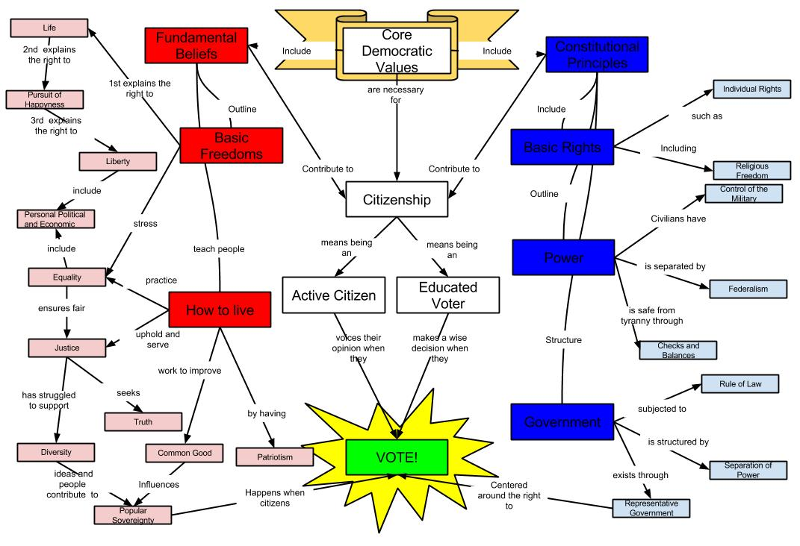

Key Features of Democracy
- Sovereignty of the people - The ultimate power rests with the citizens.
- Elections - Leaders and representatives are chosen by the people.
- Separation of powers - Power is divided into three branches:
- Legislative (makes laws)
- Executive (runs the government)
- Judiciary (interprets and enforces laws)
- Rights and freedoms - People have freedom of speech, expression, assembly, and religion.
- Rule of law and equality - Everyone is subject to the same law without discrimination.
Types of Democracy
- Direct democracy - People directly make decisions (e.g., referendums).
- Representative democracy - People elect representatives to make decisions on their behalf.
- Mixed democracy - A combination of direct and representative forms.
Separation of powers
The powers of government are divided into three branches:
- Legislative - makes the laws
- Executive - administers and governs the country
- Judiciary - interprets the law and delivers judgments

Image Source